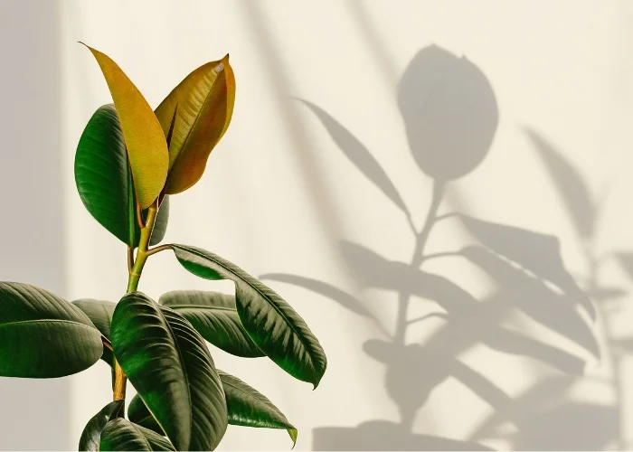

Ficus Elástica
O Ficus Elástica, também conhecido como figueira-borracha ou árvore-da-borracha, é uma planta ornamental popular devido às suas grandes e brilhantes folhas verdes e sua robustez. Suas folhas são espessas, coriáceas e ovais, variando de verde-escuro a verde-claro, com algumas variedades exibindo bordas rosadas ou amareladas. Quando jovens, as folhas novas podem surgir envoltas em uma capa vermelha que se desfaz à medida que a folha se expande.
Nativa das florestas tropicais do sudeste asiático, o Ficus Elástica pode atingir grandes alturas quando cultivado ao ar livre, chegando a até 30 metros, mas como planta de interior, ele geralmente se mantém entre 1 e 3 metros. Seu nome comum, "árvore-da-borracha", vem do látex espesso que sua seiva produz, que já foi utilizado para a fabricação de borracha.
A planta é resistente e fácil de cuidar, preferindo luz indireta brilhante, mas tolerando ambientes com pouca luz. Ela precisa de regas moderadas, e seu solo deve estar sempre bem drenado. O Ficus Elástica é uma excelente escolha para quem deseja uma planta de interior vistosa e de fácil manutenção, com um visual tropical e elegante.